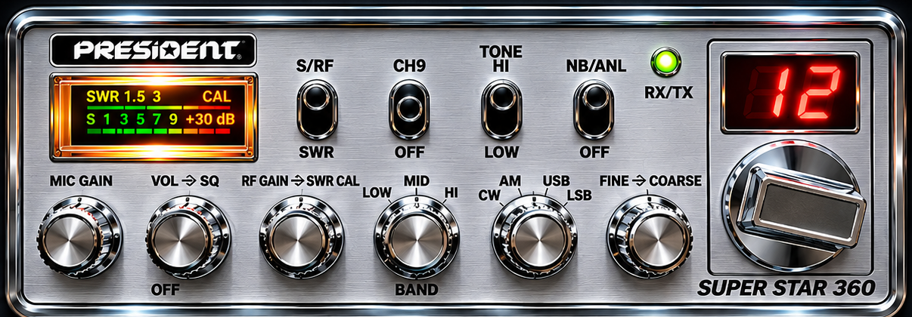

S 0S-MÈTRE
7.15000MHz · LSB · PRÉRÉGLAGE
SUPERSTAR SDR · Version 3.1 Silver
CLARIFIER · RÉGLAGE FIN LSBDisponible pendant l'écoute
HORS LIGNE
0 trame audio— Hz— dBm
📡 SCAN HF · bandes radioamateurs
SCAN HF
PRÊT7.15000 MHz · LSB
Détection d'activité radio, pas reconnaissance de la parole.
📻 CB · 40 CANAUX
PRÊT1927,185 MHz
Balayage des 40 canaux sur le récepteur connecté.
📻 Bandes et accord manuel
☆ Mémoires et favoris
⚙ Réglages et tests de connexion
Relais non vérifié